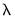

|
|
|
To estimate a elastic net (Enet) specification in EViews you must first create an equation object. You may select Object/New Object.../Equation or Quick/Estimate Equation… from the main menu, or enter the keyword equation in the command window. Next, select ENET - Elastic Net Regularization in the Method drop-down menu. Alternately, entering the keyword enet in the command window will create a new equation object and automatically set the estimation method.The Specification tab displays settings for the variables in the equation specification, basic penalty definition, and the estimation sample. As the Sample specification should be familiar, we focus our attention on the first two sectionsYou should enter the dependent variable followed by a list of regressor series or group objects in the Equation specification edit field. The special “C” regressor variable keyword may be used to include an unpenalized intercept in the specification.If you wish to specify individual regressors with penalty weightin Equation (37.1), or wish to place inequality restrictions on the coefficient values, you may do so using special expressions of the form:
where weight_value is a non-negative value, coef_min is a non-positive minimum coefficient value, and coef_max is a non-negative maximum coefficient value.There are two forms of the special expression. In the specialized abbreviated form, you specify the variable name followed by the penalty weight value. In the more general form, you may specify the variable name followed by one or more keyword expressions in arbitrary order, with the “wgt=” argument specifying the penalty weight, “cmin=” giving a non-positive minimum coefficient value, and “cmax=” providing a non-negative maximum coefficient value.When specifying individual regressor behavior using @vw, keep in mind that:
in the Alpha edit field,
. By default,
is set to 0.9.
, and not in the elastic net parameterization,
(see “The Mixing Parameter” for discussion).
If you wish to estimate ridge regression as a special case of elastic net you should specify your Type as Elastic net and enter “0” for, and specify the parameter
in using the elastic net parameterization.
The Lambda edit field controls the overall penalty parameter . You may enter a single value, multiple values in the form of a list of values and/or vector objects, or you may leave the edit field blank to have EViews automatically determine a list of values.Additional options for the specification ofvalues and options controlling cross-validation model selection are specified in the Penalty tab of the dialog.
Additional options related to the computation of the coefficient penalty are specified in the Penalty tab of the dialog:There are three sections in this dialog: a Penalty options section which contains options that affect the penalty calculations, a Path definition section which controls the automatic determination of a list of penalty values, and a Path stopping rules section which controls the computation of estimates along the-path.
The Penalty options section provides settings related to the computation and selection of penalty values.Individual penalty weightsmay be specified using a vector in the workfile by entering the vector name in the Individual lambda wgts. vector edit field. The vector containing non-negative values should be sized to match the number of coefficients in the specification.
If vector weights are specified here, and individual weights are specified in the Specification dialog page using the @vw keyword (“Equation Specification”), the vector weights will be applied first, followed by the individual variable weights.There is a Cross-validation options button that is enabled if you have specified multiplevalues in the Specification tab. These options provide settings for controlling the cross-validation model selection procedure which computes an optimal value of
. See “Cross-validation Settings” for details.
The Regressor scaling and Dependent scaling drop-down menus control settings for the automatic scaling of your data. You may choose between: None, Std. dev. (pop.), Std. dev. (sample), Absolute value (L1), Squared value (L2), and Min-max scaling:
) or unbiased sample (division by
) estimates of the data variance.
values using the approach outlined in “Automatic Lambda Grid”.
Two options for the automatic construction of this path are contained in the Path definition section:First, Path length is the maximum number ofvalues to specify along the path. The default length of the path is 100.
Second, the Path min/max ratio is the ratio of the largest value ofto the smallest value of
along the path. The largest value is determined by using the data to compute the smallest
penalty for which all of the estimated coefficients are 0. (For ridge regression specifications, coefficients are not easily pushed to zero, so we arbitrarily use an elastic net model with
to determine this penalty.) The resulting
will be the largest value of
considered. The smallest value is
times the value of this parameter. The default value is 0.001.
To account for this possibility, you may specify Path stopping rules so that path estimation will stop when certain criteria are reached:The first two options describe stopping rules associated with the model fit: path estimation will stop when the current model R-squared exceeds the value in the Max. R-squared, or when the change in the sum-of-squared residuals (deviance) between the priormodel and the current
model is less than the Min. change in deviance value.
The Min. path length option is a modifier to the path stopping rules, specifying the minimum number of path lambda to estimate before applying any stopping rules.The remaining optional edit fields allow you to stop the path estimation when the number of non-zero coefficients becomes large. You may specify the limit on the number of coefficients as an explicit value (Number of coefficients) or as a fraction of the number of observations in estimation (Fraction of observations), or both. If specified, the coefficient restrictions are evaluated once the minimum path length requirement is satisfied.The Options tab contains the remaining estimation settings. There are four sections: Coefficient limits, Weights, Estimation, and Coefficient name.Coefficient minimum and maximum values may be specified using vectors or a scalar in the Min values vector and Max values vector edit fields.If vector coefficient limits are specified and individual regressor limits are specified using individual variables with the @vw keyword in the Specification page (see “Equation Specification”), the vector limits will be applied first, followed by the individual limits.The familiar Weights section allows you to specify individual estimation weights.The Type dropdown menu is used to specify the form of the data in the specified weight series: None, Inv. std. dev., Inverse variance, Std. dev., or Variance. If you select a Type other than None, EViews will prompt you to provide a weight series name. The Scaling dropdown menu allows you to specify a scale to apply to the values in the weight series. By default EViews scales the weights so the square roots sum to.
The Estimation section offers settings for controlling iterative estimation.For elastic net and Lasso estimation, the Optimization method allows you to choose between the EViews, Covariance, and Naive methods. Discussion of the choice requires a bit of background.Briefly, iterative estimation of these penalized regression models is performed by EViews using the active-set cyclical coordinate descent algorithm as described in detail by Hastie, Tibshirani, and Friedman (2010). Within this framework, the authors outline two approaches to cyclical coordinate descent which they term the naive and the covariance update methods.To balance these competing burdens, the EViews setting offers a default estimation method which uses covariance updates if the number of variables is less than or equal to 200, and naive updates if the number of variables is greater than 200. You may use the Covariance, and Naive settings to specify a method in place of this EViews default.The Max iterations and Convergence tolerance edit fields control those two aspects of estimation. The Max iterations option is self-explanatory. The Convergence setting needs a bit of discussion.
 where
where  is the number of non-zero
is the number of non-zero  .
. parameter.
parameter. is fixed at 1.0.
is fixed at 1.0. is fixed at 0.0.
is fixed at 0.0.  values, EViews will sort the values from high-to-low, and perform path estimation using values from the higher
values, EViews will sort the values from high-to-low, and perform path estimation using values from the higher  estimates as “warm” starting values for the next lower
estimates as “warm” starting values for the next lower  . EViews will perform cross-validation model selection to identify a “best”
. EViews will perform cross-validation model selection to identify a “best”  from among the specified values.
from among the specified values.  -norm divided by
-norm divided by  ,
,  -norm divided by
-norm divided by  .
.  values to account for the automatic adjustment. EViews determined
values to account for the automatic adjustment. EViews determined  path values will be obtained using the scaled data,. All
path values will be obtained using the scaled data,. All  values will be reported on the original scale
values will be reported on the original scale sorted from high to low, , path estimation begins by estimating a model with (the most penalized specification) and continuing to estimate successively less penalized models, using the results from the previous
sorted from high to low, , path estimation begins by estimating a model with (the most penalized specification) and continuing to estimate successively less penalized models, using the results from the previous  as starting values. EViews will stop path estimation in the event that convergence is not achieved for a given
as starting values. EViews will stop path estimation in the event that convergence is not achieved for a given  .
. . In these cases, continuing along the path to estimate additional models at lower
. In these cases, continuing along the path to estimate additional models at lower  offers little benefit at considerable computational cost.
offers little benefit at considerable computational cost. residual updates; one full computation of the residuals as each coefficient is updated.
residual updates; one full computation of the residuals as each coefficient is updated.